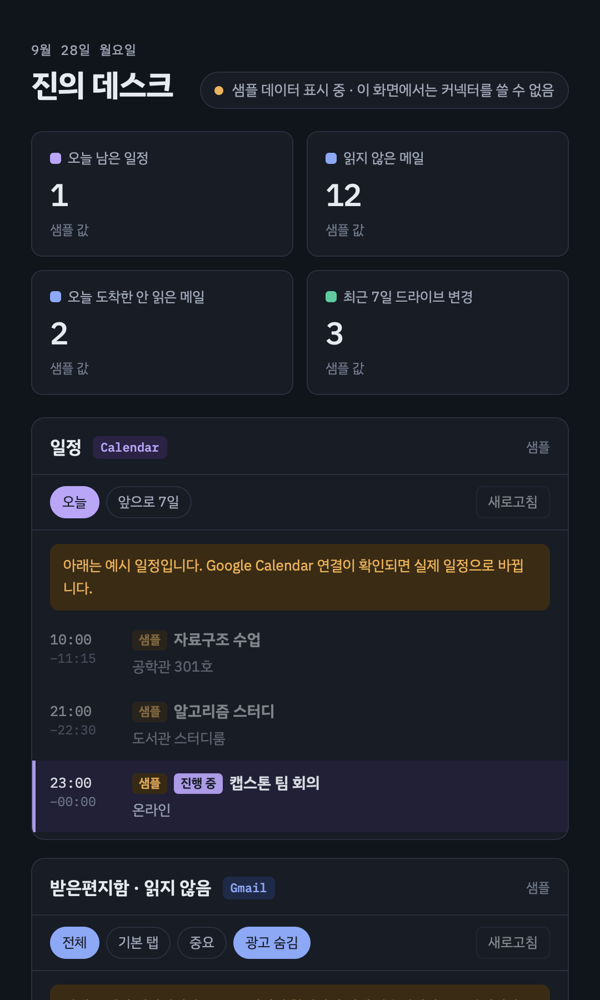

진의 데스크
Gmail · Google Calendar · Google Drive를 한 화면에 모아 보는 개인용 macOS 앱 (Jin Desk — a personal macOS dashboard)
메일·일정·드라이브 최근 파일을 앱 창과 macOS 위젯으로 보여 주는 오픈소스 개인 프로젝트입니다. 모든 데이터는 사용자의 맥에서만 처리되며 별도 서버가 없습니다.

Gmail · Google Calendar · Google Drive를 한 화면에 모아 보는 개인용 macOS 앱 (Jin Desk — a personal macOS dashboard)
메일·일정·드라이브 최근 파일을 앱 창과 macOS 위젯으로 보여 주는 오픈소스 개인 프로젝트입니다. 모든 데이터는 사용자의 맥에서만 처리되며 별도 서버가 없습니다.
